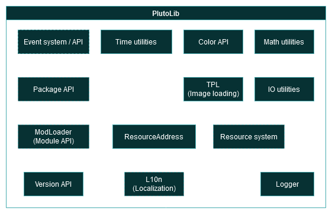
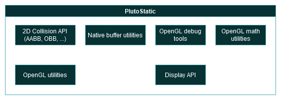
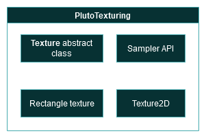
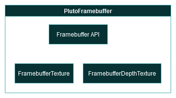
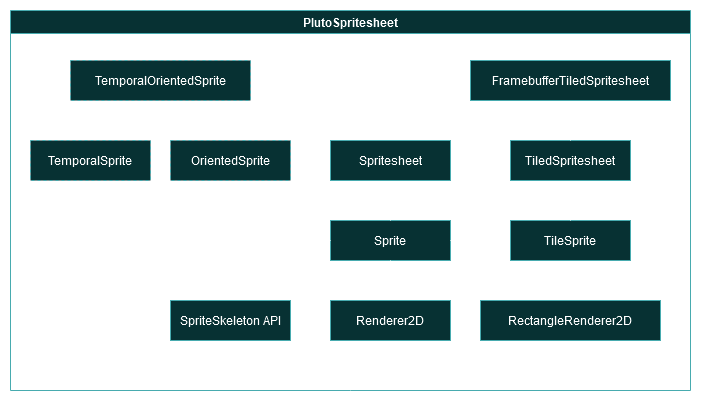
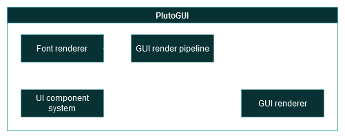
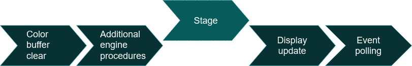

PlutoEngine is a simple modular 2D game engine written in Java.
It is primarily designed to power cross-platform desktop games.
The rendering engine is built on OpenGL (core profile version 3.3),
which allows us to use modern rendering techniques (such as programmable shaders)
while supporting older machines. At the moment, Vulkan support is not planned.
Case studies
Unity
Unity is a game engine that supports both 2D and 3D games
with a large amount of features and plugins.
Unity2D has built-in tile and tilemap support, a sprite editor,
renderer and a sprite atlas API. Sprites are an integral part of
many 2D games and this should be one of the core features of a 2D
game engine.
Unity uses C#/Mono as its main scripting language, which in our case
is nearly impossible to implement as combining Java and C# is very
difficult.
Godot
Godot is a relatively new open-source game engine written in C++.
Just like Unity, it comes with its own editor, however it also has
its own integrated code editor, while in Unity developers usually
use either VisualStudio, MonoDevelop, or some other C#-compatible
editor.
It features various featues designed for 2D games, such as sprites
and spritesheets, parallax backgrounds, 2D particles and lights.
While equipped for both 2D and 3D graphics, just like Unity,
Godot seems to be more 2D-oriented than Unity.
Godot uses its own scripting language GDScript, however support for
other languages like C# and C++ is present.
Engine design
The PlutoEngine is designed as a set of modules. Each component is usable
separately with the exception of dependencies (here denoted as arrows),
which are included transitively.
LWJGL also offers bindings for GLFW, a library simplifying the creation
of native windows in a platform-agnostic manner.
PlutoLib

PlutoLib library architecture, items with dashed borders are awaiting implementation
For image loading, Java's built-in ImageIO library can be used
to save development time and avoid adding unnecessary complexity to the codebase.
PlutoLib should never contain any native code. For that
reason, stb is included with PlutoStatic.
PlutoStatic

PlutoStatic library architecture, items with dashed borders are awaiting implementation
PlutoTexturing

PlutoTexturing library architecture, items with dashed borders are awaiting implementation
This library requires further cleanup as there are too many objects
created for a single vertex array.
PlutoMesher & PlutoShader
These libraries provide an abstraction around OpenGL's native functions.
PlutoShader
PlutoShader has recently been rewritten to simplify the process
of loading and using shaders.
Uniforms are automatically resolved based on their Java field names
in their shader program class using the Java Reflection API, greatly
reducing the amount of code written to create a PlutoEngine shader.
PlutoFramebuffer

PlutoFramebuffer library architecture
PlutoFramebuffer provides a simple and lightweight abstraction over
OpenGL's framebuffer objects, streamlining the usage of vertex arrays
and shaders.
PlutoSpritesheet

PlutoSpritesheet library architecture, items with dashed borders are awaiting implementation
Sprite API
Each sprite has a 2D texture it belongs. It will be possible
2D renderer
The 2D renderer has recently been rewritten to use builder-style
command chains, removing the need for dozens of function overloads.
It works rather well for a small amount of draw calls, however
more specialized implementations might be needed for some use
cases, especially world rendering.
Tiled spritesheets
Tiled spritesheets provide a simple way to dynamically create
a single spritesheet, while automatically expanding when full.
The OpenGL implmentation is backed by a framebuffer, allowing
the engine to create large stitched textures without leaving
the GPU's memory.
Oriented sprites
Many games require to show certain objects (like the player)
from multiple sides.
This can be easily implemented by either dumping all sides of said
sprite into a single spritesheet or creating an array texture
(OpenGL 3.0).
Temporal sprites
The same techniques can be used to create animated
(here called temporal) sprites, with the only exception being
timers needed to implement animation speed control.
Temporal oriented sprites
Finally, some games have sprites that are animated and look
differently from each side. Despite being a niche use case,
this feature will probably make it through for the API's
completness' sake. It should also be relatively easy to implement.
SpriteSkeleton
SpriteSkeleton is an experimental effort to create skeletal animations
using sprites, but in order to create skeletons, a serialization format
needs to be created, as defining each "limb" in code would be a very
tedious task. At the moment, SpriteSkeleton doesn't support skeletal
animations, making the API somewhat pointless.
Spritesheet Serialization
Currently it is impossible to serialize and deserialize
spritesheets as they are built dynamically on the GPU.
In order to retrieve the spritesheet, it has to be
dowloaded from the VRAM back to the main system memory,
which is not currently implemented in PlutoTexturing.
That being said, spritesheet serialization is not a priority
at the moment as there is no editor to benefit from this feature.
PlutoGUI

PlutoGUI library architecture, items with dashed borders are awaiting implementation
PlutoGUI requires a full rewrite. The font renderer is extremely inefficient
and by far the slowest part of the engine as each character is treated
as a single draw call.
New render pipeline
PlutoGUI will receive a new render pipeline, allowing batch rendering
of GUI components by adding components to a list and then generating
an optimized list of abstract low-level draw commands, which are
then interpreted the renderer.
Possibly some parts of the planned Tile Engine API
could be utilized.
Examples of draw commands:
Go to position …
Change UV coordinates to …
Switch to sprite …
Enable shader effect …
Render mesh …
A UI component system
Currently, if you want to render a complex GUI, you need to use the 2D
renderer from PlutoSpritesheet and manually handle mouse and keyboard
events manually, basically forcing you to implement the entire GUI
yourself.
A GUI component system would provide a solid abstract foundation for
creation of complex user interfaces without the need to handle low
level events.
PlutoAudio
Many games use FMOD or Wwise as their audio engine,
which are proprietary and unsuitable for an open-source game engine.
For that reason, PlutoEngine will provide its own sound engine and use
open formats like OGG/Vorbis and Opus.
For an audio API, OpenAL is the most viable and accessible solution.
Because LWJGL currently does not provide means to read Opus codec streams
from OGG files, only OGG/Vorbis support is planned for the foreseeable future.
Other platforms
PlutoEngine was primarily designed to be a desktop game engine and will
work across all major operating systems, as long as JVM can be run
and LWJGL native libraries compile and run on said platform.
At least the following platforms will be supported in the full release:
Linux x64
Windows x64
macOS x64
Support for aarch64 (ARM64) depends on LWJGL's native libraries,
especially GLFW.
PlutoCore
PlutoCore is PlutoEngine's main entry point and greatly reduces
the amount of code to get started.
The Application API
The Application API automatically performs all required startup tasks
to load necessary modules and create the OpenGL context. Programmers
can focus on writing the game logic itself instead.
The Stage API

By far the most important API PlutoEngine has to offer. It is the engine's
main programmable part also responsible for asset management.
A "stage", in this context, is a set of assets bound together by programming logic,
not necessarily a game level. Stage switching and asset management are handled
by the engine.
It is still very early into development, the progress can be tracked on GitHub.
Tile engine/renderer
Many 2D games are tile-based, meaning the world consists of a tile grid.
Rendering each tile would be very expensive and wasteful.
An optimized tile engine can render draw thousands of tiles in a single draw call,
the only bottleneck being the graphics card's ability to fill pixels.
There are multiple approaches to achieve this:
GPU instancing
(not very suitable for small meshes, such as two triangles forming a quad)
Rendering each tile to a texture, which would serve as a cache
Generating meshes on the CPU
Writing only single coordinates and tile type vertex data, drawing points
and converting those points to triangles in a geometry shader (This does not save much processing power)
Uploading the tile IDs to the GPU memory and using a lookup table to determine the tile sprite from a spritesheet
These approaches can also be combined, but that seems
to be borderline overengineering.
A renderer of this kind may eventually make it into PlutoSpritesheet.
Particle system
Particle systems will eventually make it to the engine, probably not
in the next two releases.
3D mesh rendering and shaders
While technically possible, rendering of 3D objects is not a priority.
3D model support
3D model support in any shape or form is at the point of writing this
not planned.
Editor
Having an editor for each of the engine's features
is one of the long term goals of the PlutoEngine
project, but currently there is no reason to have
one as the stage and particle systems are not implemented
yet and the Sprite API is still somewhat incomplete.
Creating an editor would also involve creating proper GUI
components, which will be unavoidable at some point.
Scripting support
Scripting language support is currently not planned as the engine
is designed to be modular and anyone can write their own module in
a JVM-based language (Java, Kotlin, …).
Java's Nashorn JavaScript engine would be a good candidate, however
is it deprecated.
GraalVM is a possible solution for this problem and it requires
further research.